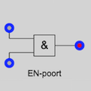
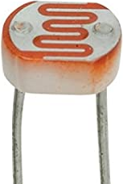
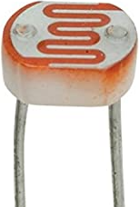

Online Systeembord
×
Versie
© 2020 Jeroen van Tilburg, MIT licentie
Feedback naar
Broncode: Github
Beschikbare versies:
Vorige versie (2.2)
Standaardversie (2.3)
Ontwikkelversie (2.4)
Online Systeembord
Versie
© 2020 Jeroen van Tilburg, MIT licentie
Feedback naar
Broncode: Github
Beschikbare versies:
Vorige versie (2.2)
Standaardversie (2.3)
Ontwikkelversie (2.4)
×
Beknopte instructie
- Verbindingssnoeren maken:
De snoeren moeten van een uitgang naar ingang worden getrokken. Klik op een uitgang (rode cirkel) en sleep het snoer naar een (grijze) ingang. - Meerdere verbindingssnoeren:
Een uitgang kan met meerdere ingangen worden verbonden. - Verbindingssnoeren verwijderen:
Sleep het snoer weg van de ingang. - Drukschakelaar:
Met een klik-sleep kan de schakelaar worden vastgezet. - Relais:
De relais is al aangesloten op een wisselspanningbron. De zwarte uitgangen kunnen worden verbonden met de lamp of de elektrische verwarming. - Virtuele sensoren:
De LDR van de lichtsensor kan worden gesleept. De spanning is afhankelijk van de afstand tot de lamp, wanneer die aan staat.
De temperatuursensor is (draadloos) verbonden met de thermometer bij de verwarming. - Echte sensoren:
De geluidsensor is aangesloten op de microfoon van de computer (je moet hiervoor wel toestemming geven).
De webcamsensor is aangesloten op de webcam van de computer (je moet hiervoor wel toestemming geven). De uitgangsspanning wordt bepaald door de helderheid van het opgenomen beeld van de webcam. Doordat de webcam automatisch de helderheid van het beeld aanpast aan de hoeveel licht komt de uitgangsspanning niet overeen met de lichtintensiteit van de omgeving.
- Voltmeter:
Met de voltmeter kan de spanning op een uitgang worden gemeten. De andere ingang van de voltmeter is al verbonden met de aarde. - Meer informatie:
Zie de handleiding van het systeembord.
×
Deze javascript-applicatie simuleert de werking het het systeembord zoals dat wordt gebruikt in de lessen natuurkunde in het voortgezet onderwijs. Met dit programma kunnen leerlingen thuis en op school oefenen met de werking van het systeembord. Op die manier kan het een aanvulling zijn op de practica op school met het echte systeembord. Het Online Systeembord is ontstaan in 2020 tijdens de Corona-crisis om leerlingen toch een practicum te kunnen bieden ondanks het feit dat ze niet naar school konden komen. De meeste opgaven en werkbladen zoals die worden aangeboden door de verschillende natuurkundemethodes kunnen direct worden toegepast op het Online Systeembord. Een korte uitleg van het Online Systeembord is te vinden via
Werken met xml-bestanden
Een uitwerking van een opgave kan worden opgeslagen als xml-bestand (
Nieuwe opstellingen
Het Online Systeembord kan gemakkelijk worden aangepast naar eigen wensen. Via het menu
Hashtag en xml-bestanden
Het Online Systeembord kan ook een xml-bestand inladen via een directe link. Zo kan je gemakkelijk een bepaalde opstelling delen met leerlingen zonder dat ze eerst het xml-bestand ergens vandaan moeten halen en daarna via
Compatibiliteit
Online Syteembord werkt niet in Internet Explorer. Internet Explorer is te verouderd voor deze software. Het is aan te raden om over te stappen op een moderne browser als Chrome, Edge, Firefox of Safari.
Insluitcode en ELO
Docenten kunnen het Online Syteembord insluiten (embedden) in hun eigen elektronische leeromgeving (ELO). De insluitcode is bijvoorbeeld:
De breedte en hoogte kan je eventueel aanpassen aan jouw systeem of omgeving. Het is uiteraard ook mogelijk om je eigen xml-bestand te gebruiken door de hashtag toe te voegen aan het webadres (zie hierboven).
Broncode
De broncode van deze website is vrij beschikbaar op Github onder de MIT licentie. De broncode mag vrij worden gekopieerd en gehost op iedere webserver. Zorg er dan wel voor dat de code up-to-date blijft omdat er regelmatig updates en bugfixes zijn. De huidige versie is
Feedback en vragen
Om de website en het Online Systeembord zo gebruiksvriendelijk te maken ben ik afhankelijk van jullie feedback. Vragen, verbeteringen, bug reports, suggesties, commentaar en complimenten kunnen worden gestuurd naar
Overige webapplicaties
Er zijn verschillende programma's en webapplicaties gemaakt door derden waarin het systeembord wordt gesimuleerd en waarin logische schakelingen kunnen worden gebouwd. Kies de software die voldoet aan jouw eisen.
Informatie voor docenten
AlgemeenDeze javascript-applicatie simuleert de werking het het systeembord zoals dat wordt gebruikt in de lessen natuurkunde in het voortgezet onderwijs. Met dit programma kunnen leerlingen thuis en op school oefenen met de werking van het systeembord. Op die manier kan het een aanvulling zijn op de practica op school met het echte systeembord. Het Online Systeembord is ontstaan in 2020 tijdens de Corona-crisis om leerlingen toch een practicum te kunnen bieden ondanks het feit dat ze niet naar school konden komen. De meeste opgaven en werkbladen zoals die worden aangeboden door de verschillende natuurkundemethodes kunnen direct worden toegepast op het Online Systeembord. Een korte uitleg van het Online Systeembord is te vinden via
Help -> Beknopte instructie.
Werken met xml-bestanden
Een uitwerking van een opgave kan worden opgeslagen als xml-bestand (
Bestand -> Opslaan als ...). De docent kan op deze manier de goede uitwerking met de leerlingen delen of de leerlingen kunnen hun eigen uitwerking als xml-bestand opsturen naar de docent. Via
Bestand -> Open bestand...kan het xml-bestand worden geladen en de oplossing worden gecontroleerd.
Nieuwe opstellingen
Het Online Systeembord kan gemakkelijk worden aangepast naar eigen wensen. Via het menu
Componentenkunnen componenten worden toegevoegd, verplaatst en verwijderd. Zo kan je een eigen systeembord bouwen of zelfs een geheel nieuwe opstelling. Middels
Bestand -> Opslaan als ...kan deze nieuwe opstelling worden gedeeld met de leerlingen. Dit kan ook een opstelling zijn die hoort bij een bepaalde opgave, waar de juiste componenten alvast klaar staan en de leerlingen alleen nog de verbindingen moeten maken.
Hashtag en xml-bestanden
Het Online Systeembord kan ook een xml-bestand inladen via een directe link. Zo kan je gemakkelijk een bepaalde opstelling delen met leerlingen zonder dat ze eerst het xml-bestand ergens vandaan moeten halen en daarna via
Bestand -> Open bestand...het bestand moeten inladen. Dit kan op twee manieren:
- Met de bestaande xml-bestanden in de
database van Online Systeembord. De betreffende opstelling wordt direct
ingeladen door het toevoegen van een hashtag met de naam van het xml-bestand aan het
webadres. Zo wordt de flipflop-opstelling direct getoond via deze link:
https://jeroenvantilburg.github.io/systeembord/#voorbeelden/SRNORLatch.xml
of korter via deze link:
https://jeroenvantilburg.nl/systeembord/#voorbeelden/SRNORLatch.xml
Stuur je favoriete of veel gebruikte xml-bestanden naar mij op zodat ik die aan de database kan toevoegen. - Met je eigen xml-bestanden die ergens op een webserver staan. De directe link wordt dan
bijvoorbeeld:
https://jeroenvantilburg.nl/systeembord/#https://www.example.com/test.xml
Hiervoor heb je een eigen website/webserver nodig waarbijAccess-Control-Allow-Origin
is toegestaan vanwege de CORS-policy van de meeste browsers. Je kan ook jouw xml-bestanden hosten op je eigen Github Pages. Je kan eenvoudig een eigen Github account maken en daarna Github Pages aanzetten. Met je eigen Github Pages omzeil je hiermee in ieder geval mogelijke CORS restricties. De directe link wordt dan bijvoorbeeld:https://jeroenvantilburg.nl/systeembord/#https://mijnnaam.github.io/mijnproject/test.xml
Compatibiliteit
Online Syteembord werkt niet in Internet Explorer. Internet Explorer is te verouderd voor deze software. Het is aan te raden om over te stappen op een moderne browser als Chrome, Edge, Firefox of Safari.
Insluitcode en ELO
Docenten kunnen het Online Syteembord insluiten (embedden) in hun eigen elektronische leeromgeving (ELO). De insluitcode is bijvoorbeeld:
<iframe src="https://jeroenvantilburg.nl/systeembord/" width="100%" height="800"></iframe>
De breedte en hoogte kan je eventueel aanpassen aan jouw systeem of omgeving. Het is uiteraard ook mogelijk om je eigen xml-bestand te gebruiken door de hashtag toe te voegen aan het webadres (zie hierboven).
Broncode
De broncode van deze website is vrij beschikbaar op Github onder de MIT licentie. De broncode mag vrij worden gekopieerd en gehost op iedere webserver. Zorg er dan wel voor dat de code up-to-date blijft omdat er regelmatig updates en bugfixes zijn. De huidige versie is
Feedback en vragen
Om de website en het Online Systeembord zo gebruiksvriendelijk te maken ben ik afhankelijk van jullie feedback. Vragen, verbeteringen, bug reports, suggesties, commentaar en complimenten kunnen worden gestuurd naar
Overige webapplicaties
Er zijn verschillende programma's en webapplicaties gemaakt door derden waarin het systeembord wordt gesimuleerd en waarin logische schakelingen kunnen worden gebouwd. Kies de software die voldoet aan jouw eisen.

 
